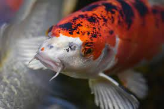

Habitad

Las carpas Koi son peces de agua dulce de la especie Cyprinus carpio. Estos animales son omnívoros con tendencia herbívora y viven en cardúmenes con los que se desplazan de sus zonas de descanso a los lugares en los que buscan alimento. Además, las carpas Koi son muy conocidas por tener un carácter pacífico y sociable.
Caracteristicas
La carpa koi es el pez más popular como animal de estanque
- La longitud máxima del pez koi es de 2 m
- La carpa koi tiene una longevidad de entre 25 y 35 años
- son, además, un auténtico símbolo en su país de origen (China)
- provien del occidente
menú